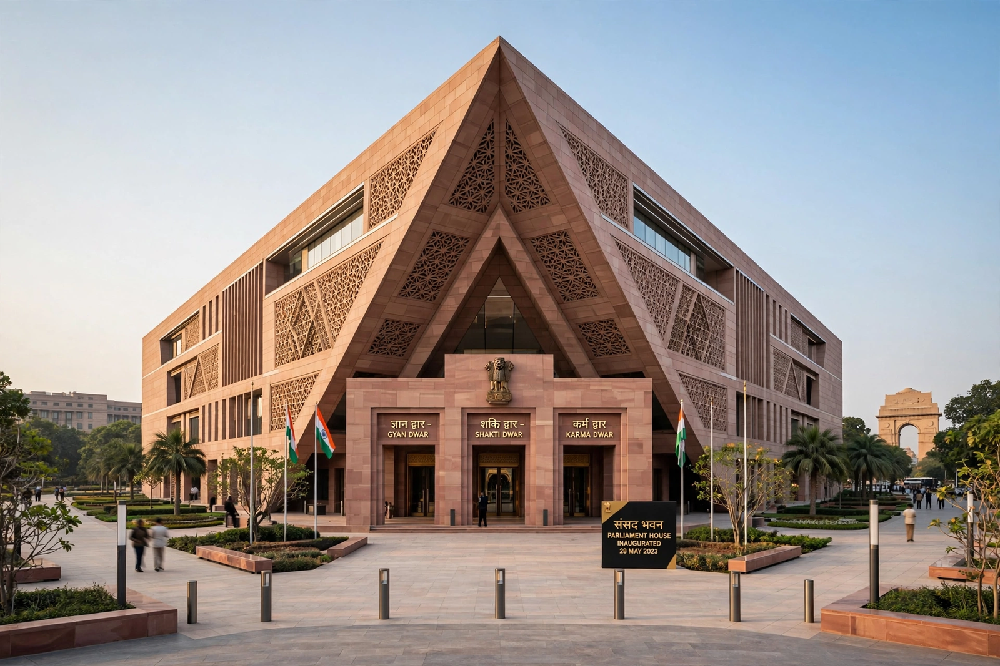

Parliament of India
From Wikipedia, the free encyclopedia

The Parliament of India is the supreme legislative body of the Republic of India. It consists of the President of India and two houses: the Rajya Sabha (Council of States, the upper house) and the Lok Sabha (House of the People, the lower house). Modelled broadly on the Westminster system, it sits in New Delhi — since 2023 in a new Parliament House beside the colonial-era old building.
Composition
The Lok Sabha has up to 543 elected members chosen directly from single-member constituencies (two formerly reserved Anglo-Indian nominated seats were abolished in 2020). The Rajya Sabha has 245 members, mostly elected by state legislatures through proportional representation, plus twelve nominated by the President for distinction in arts, science, literature and social service. A delimitation freeze has kept constituency boundaries based on the 1971 census, a growing source of debate.
Functions
Parliament legislates (money bills originate only in the Lok Sabha), controls the executive through question hour and no-confidence motions, approves the budget, and can amend the Constitution — subject to the Basic structure doctrine. The President summons and prorogues sessions and assents to bills; the Council of Ministers is collectively responsible to the Lok Sabha, from whose majority the Prime Minister of India is drawn.
History
The Parliament succeeded the Constituent Assembly of India under the Constitution of India (1950). It has met in moments of national drama — the 1975–77 Emergency proclaimed under Indira Gandhi, the 2001 terrorist attack on the building, and the inauguration of the new triangular Parliament House in May 2023 as the centrepiece of the Central Vista project.